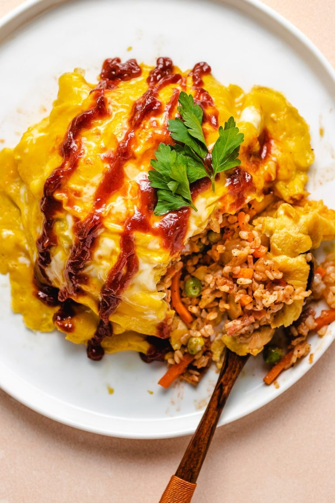

Omurice

Description
The rice tastes sweet and savory and the eggs are creamy and buttery. It's a popular comfort
food at home and diner restaurants, particularly popular among children. Read more here
Ingredients
- Shirataki rice (or a day-old cooked white rice)
- Ghee (or butter)
- Olive oil
- Yellow onion
- Turkey bacon (or cooked ham, chicken, or Canadian bacon)
- Frozen peas and carrots
- Salt and pepper
- Ketchup
- Eggs
- Dairy-free creamer